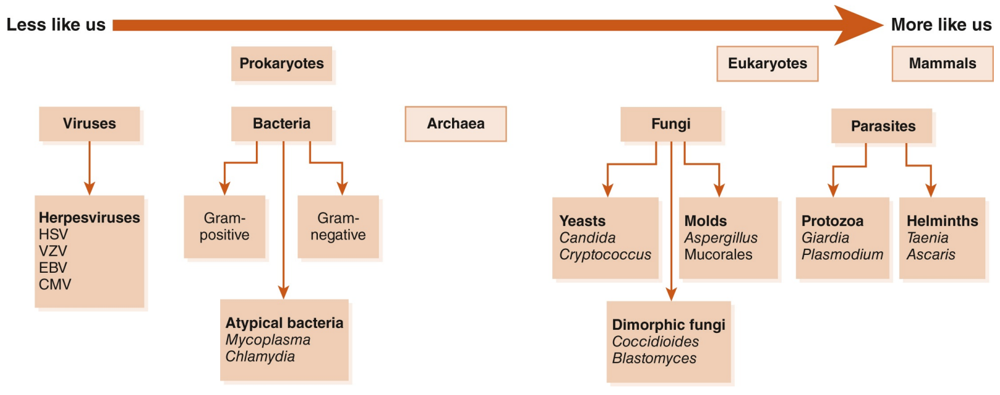
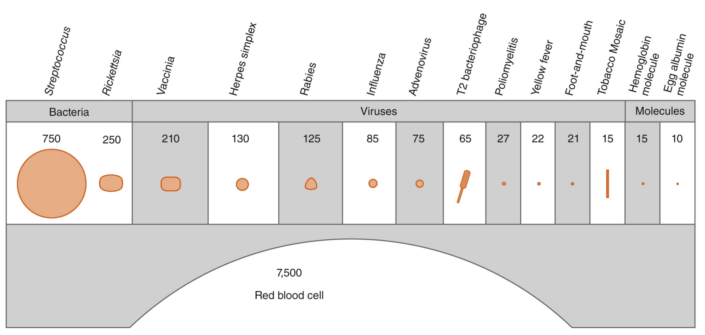
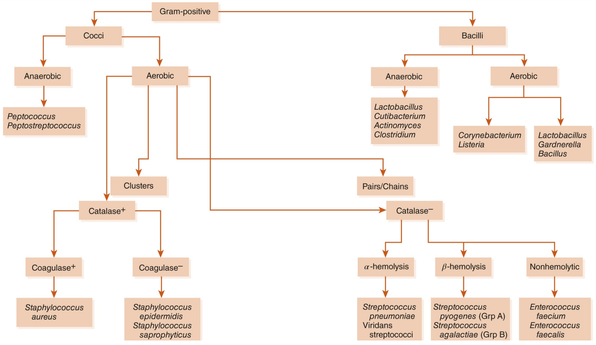
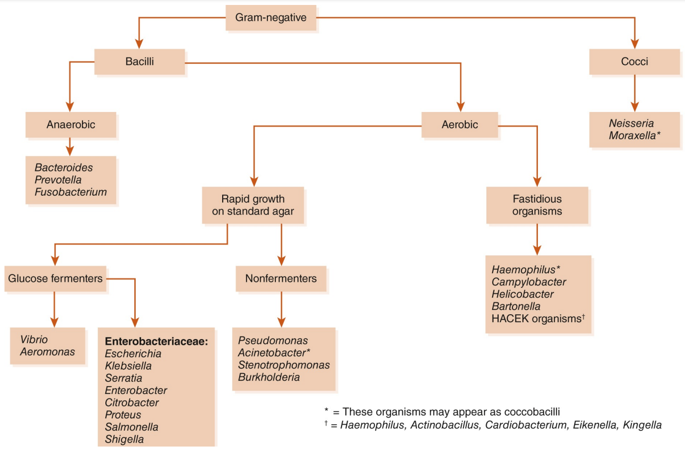

010100 The Wonderful World of Microbiology
Despite the promises of the household-products industry, almost every surface is covered in microorganisms almost all the time. Swab a countertop, your skin, or your dinner, and you will find a little world - and that covers only the estimated 1% of bacteria that can be cultured! Obviously, trying to sterilize our patients (and our countertops) is futile; we have to try to target the bad organisms and let the rest happily crawl all over us - they greatly outnumber our own cells in our bodies anyway.
In the microbial world, bacteria lie toward the “less like us” end of the spectrum (Figure 1). They are prokaryotes, not eukaryotes like fungi, protozoa, and humans. Viruses are even more different from us - they are a virus-making package of genetic instructions in a cellattacking protein coat (Figure 2). Differences between cells of microorganisms and humans in anatomy, biochemistry, and affinity of antibiotics for their targets are what allow for the safe and effective use of antibiotics. In this section we will concentrate on the microbiology of bacteria. The unique characteristics of fungi, viruses, mycobacteria, and parasites will be discussed in the sections where agents active against those organisms are introduced.


Differentiating bacteria that are responsible for infection from those just along for the ride can be difficult. Many bacteria that can cause human disease are also normal commensal flora, including Escherichia coli, Streptococcus pneumoniae, and Staphylococcus aureus. Thus, growth of one of these organisms from a culture is not necessarily synonymous with infection. Suspicion of infection is increased greatly if the organism grows from a normally sterile site, such as the bloodstream or cerebrospinal fluid (CSF). Indicators of infection in nonsterile sites (such as sputum and wound cultures) are a high number of organisms, the presence of inflammatory cells, and symptoms referable to the culture site (e.g., cough or dyspnea in a patient with a sputum culture growing S pneumoniae, redness and pain in a patient with a skin culture growing S aureus).
Definitive identification and susceptibility testing may take anywhere from hours to months, depending on the organism and the methods used. Microscopic examination and staining may allow for rapid preliminary identification. For bacteria, the most important of these techniques is the Gram stain. Being able to interpret preliminary results of microbiology testing will allow you to provide the most appropriate therapy for your patients as early as possible. Increasingly, new tools such as polymerase chain reaction (PCR) or matrix-associated laser desorptionionization time-of-flight (MALDI-TOF) mass spectrometry are being used to provide even more rapid and precise organism identification, but these methods are not available in all settings or on all specimen types.
One of the most fundamental differences among types of bacteria is how they react to a Gram stain. Gram stain (crystal violet) is a substance that selectively stains the cell walls of gram-positive bacteria but is easily washed away from gram-negative bacteria. Why? In grampositive bacteria, the outermost membrane is a thick layer of peptidoglycan, a cellular substance that gives bacterial cells rigidity. In contrast, gram-negative bacteria have an outer membrane of lipopolysaccharide that blocks the stain from adhering to the peptidoglycan within the cell (Figure 3).

Gram-negatives also contain peptidoglycan, but in smaller amounts, and it is not the outermost layer of the cell. Both gram-positive and gram-negative organisms contain an inner cell membrane that separates the cell wall from the cytoplasm of the organism. Figure 4 and Figure 5 show how you can identify different bacteria by differences in morphology, oxygen tolerance, and biochemical identification.


Rapid identification of gram-positive bacteria based on morphology and preliminary biochemical tests can help to direct therapy.
Morphology: Most medically important gram-positive pathogens are cocci (spheres) rather than bacilli (rods). The finding of gram-positive bacilli should be interpreted within the clinical context: In blood cultures, gram-positive bacilli often represent common skin contaminants (such as Cutibacterium, Corynebacterium, and Bacillus species), since the skin barrier must be bypassed to collect the culture. Detection of gram-positive bacilli from necrotizing wound infections suggests clostridial infection, whereas the finding of grampositive bacilli in CSF cultures raises the concern for Listeria.
Colony clustering: Within the gram-positive cocci, the staphylococci tend to form clusters, whereas the streptococci and enterococci appear in pairs or chains. Again, the clinical context aids in interpretation: The finding of streptococci in a respiratory culture suggests S pneumoniae, whereas a report of streptococci from an intra-abdominal culture suggests Enterococcus (which may be identified preliminarily as a Streptococcus).
Biochemistry and appearance on agar: The rapid catalase test helps to differentiate staphylococci from streptococci. The coagulase test is useful for differentiating the more virulent (coagulase-positive) S aureus from its cousin the coagulase-negative Staphylococcus epidermidis. S epidermidis is a frequent contaminant of blood cultures; if only one of a pair of blood samples is positive for coagulase-negative staphylococci, treatment may not be required. The pattern of hemolysis (clearing around colonies on agar plates) helps to differentiate among the streptococci: the oral flora (α-hemolytic S pneumoniae and the viridans streptococci); pathogens of the skin, pharynx, and genitourinary tract (β-hemolytic group A and B strep); and the bugs of gastrointestinal origin (nonhemolytic enterococci: the more common Enterococcus faecalis and the more resistant Enterococcus faecium).
Preliminary identification is somewhat less useful with the gram-negative bacteria because more extensive biochemical tests are usually needed to differentiate among them.
Morphology: Among gram-negative pathogens, the bacilli predominate. The situation in which identification of gram-negative cocci is most useful is in the setting of meningitis, where this finding would strongly suggest Neisseria meningitidis. Note also that some organisms have an intermediate or “coccobacillary” appearance, which may suggest organisms of the genera Haemophilus, Moraxella, or Acinetobacter.
Glucose/lactose fermentation: Many pathogens within the order Enterobacterales (including E coli, Klebsiella, Serratia, and Enterobacter) generally ferment glucose/lactose; at this point the lab may identify them as “enteric gram-negative rods” or “lactosefermenting gram-negative rods.” In contrast, Pseudomonas, Acinetobacter, Stenotrophomonas, and Burkholderia are “nonfermenters”; a report of “nonfermenting gram-negative rods” should lead you to reassess and, if necessary, broaden your antibiotic coverage, because many of these organisms have a high level of antibiotic resistance.
Fastidious organisms: These organisms are picky eaters - they grow slowly and often require specially supplemented media. Thus, it may take a few days to a few weeks for them to grow from culture.